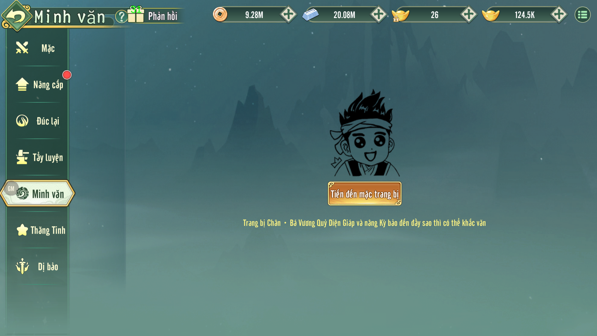

QiBao, server ngày 20
Kỳ Bảo / Khắc văn và tăng sao
Minh Văn Kỳ Bảo
Minh Văn là nhánh tăng trưởng sau khi người chơi sở hữu đúng Kỳ Bảo Chân-Bạo Vương Quỷ Diện Giáp và nâng Kỳ Bảo đến đủ sao. Mỗi lần khắc văn sinh ra 6 dòng thuộc tính, có thể bảo tồn kết quả cũ hoặc nhận bộ thuộc tính mới.
DEV: rule rõ theo config
Tester: có ma trận trạng thái
Operator: giải thích đúng UI
QiBaoStar, server ngày 38
qibao_mingwen_config.xml → citiao_count
Traceability
Nguồn Dữ Liệu & Mức Tin Cậy
XML_Config_Data_VN/qibao_mingwen_config.xml
XML_Config_Data_VN/qibao_config.xml
XML_Config_Data_VN/trigger_cfg.xml
QiBao mở cấp 70 ngày 20; QiBaoStar mở cấp 70 ngày 38.
Library/KyBao_MinhVan/*.png
Tài liệu này chỉ ghi các rule có bằng chứng từ config và ảnh. Phần chưa thấy trong source, ví dụ cách khóa dòng khi bấm bảo tồn,
được đưa vào Câu hỏi mở thay vì tự suy diễn.
UI reference
Ảnh Ingame & Ý Nghĩa Thiết Kế

Player flow
Luồng Người Chơi
Mở Kỳ Bảo
Nhân vật đạt cấp 70, server ngày 20, mở hệ Kỳ Bảo qua trigger QiBao.
Trang bị đúng Kỳ Bảo
Minh Văn hiện gắn với Kỳ Bảo phụ Chân-Bạo Vương Quỷ Diện Giáp, tương ứng item 310002682.
Thăng Tinh
Người chơi tăng sao Kỳ Bảo từ 1 đến 10. Mốc sao chịu giới hạn ngày server và cấp nhân vật theo config.
Khắc Minh Văn
Khi đủ điều kiện và đủ nguyên liệu, bấm Minh văn để sinh 6 dòng thuộc tính mới.
Bảo tồn hoặc nhận mới
UI cho phép giữ kết quả hiện tại hoặc nhận kết quả mới. Quy tắc khóa từng dòng chưa thấy trong config.
State-based design
Ma Trận Trạng Thái
| Trạng thái | Điều kiện | UI/CTA | Gameplay impact | QA cần kiểm |
|---|---|---|---|---|
| Chưa mở Kỳ Bảo | Chưa đạt QiBao |
Ẩn/khóa lối vào Kỳ Bảo | Không thể vào Minh Văn | Cấp 69, server ngày 19 |
| Chưa mở Thăng Tinh | Đã có Kỳ Bảo nhưng chưa đạt QiBaoStar |
Tab Thăng Tinh chưa mở hoặc bị chặn | Không thể tăng sao để mở Minh Văn | Cấp 70, ngày server 37 |
| Chưa đủ sao | Chân-Bạo Vương Quỷ Diện Giáp chưa đạt mốc yêu cầu | Hiện nút "Tiến đến mặc trang bị" | Không sinh thuộc tính Minh Văn | Đúng câu nhắc trong ảnh Initial |
| Thiếu nguyên liệu | Thiếu mảnh hoặc Cát Tẩy Linh hoặc Bạc lượng | Nút Minh văn vẫn hiện, số lượng thiếu đổi màu | Không trừ tài nguyên, không đổi kết quả | Ảnh 0Roll: Cát Tẩy Linh 0/20 |
| Có thể khắc | Đủ điều kiện, đủ tài nguyên | Nút Minh văn sáng | Sinh 6 dòng thuộc tính mới theo pool config | Trừ đúng 1 mảnh, 20 Cát Tẩy Linh, 20000 Bạc lượng |
| Có kết quả mới | Vừa khắc xong | Hiện hai vùng thuộc tính và nút Bảo Tồn/Minh văn | Người chơi quyết định giữ cũ hoặc nhận mới | Không mất kết quả cũ trước khi xác nhận |
| Đầy sao | Kỳ Bảo đạt sao 10 | Thăng Tinh báo "Sao kỳ bảo đã đầy" | Không tăng sao tiếp, vẫn có thể khắc Minh Văn nếu đủ điều kiện | Ảnh Max |
Config rule
Rule Minh Văn
| Nhóm | Config | Ý nghĩa gameplay |
|---|---|---|
| Số dòng | citiao_count="6" |
Mỗi lần Minh văn sinh đúng 6 dòng thuộc tính. |
| Bảng thuộc tính | attribute_table_id="341000612" |
Giá trị cuối cần đối chiếu bảng thuộc tính này khi DEV/QA kiểm lực chiến. |
| Dòng cùng cấp | same_level_citiao_count="2" |
Cho phép tối đa 2 dòng loại cấp cộng thêm cùng cấp, theo config hiện có. |
| May mắn | luck_const, add_luck, take_luck, save_luck |
Mỗi lần roll có cơ chế tích/tiêu/giữ may mắn cho dòng đặc biệt; UI cần hiển thị nhất quán nếu có thanh may mắn. |
| Chi phí | consume |
Mỗi lần tiêu hao 1 mảnh Chân-Bạo Vương Quỷ Diện Giáp, 20 Cát Tẩy Linh và 20000 Bạc lượng. |
| Loại dòng | Số lượng config | Nội dung |
|---|---|---|
| Thuộc tính cơ bản | 10 dòng | Sinh mệnh, Tấn công, Phòng ngự, Chính xác, Né tránh, Tấn công võ công, Phòng ngự võ công, PvP Bonus, Chính xác võ công, Né tránh võ công. |
| Thuộc tính minh khế | 24 dòng | 8 loại minh khế, mỗi loại có sơ cấp/trung cấp/cao cấp tương ứng Tím/Cam/Đỏ. |
| Cộng thêm minh khế | 24 dòng | 8 loại minh khế, mỗi loại có +1/+2/+3; rate lần lượt 2000/4000/6000 trong config. |
rand.
310002750, cũng là kết quả phân giải item 310002682.
Progression
Thăng Tinh Kỳ Bảo
| Sao | Cấp nhân vật | Ngày server | Cộng thuộc tính thường | Cộng thuộc tính Chân |
|---|---|---|---|---|
| 1 | - | 38 | - | - |
| 2 | - | 38 | 1.5% | 8% |
| 3 | 80 | 55 | 3% | 16% |
| 4 | 80 | 55 | 4.5% | 24% |
| 5 | 100 | 55 | 6% | 32% |
| 6 | 100 | 106 | 7.5% | 40% |
| 7 | 120 | 106 | 9% | 48% |
| 8 | 120 | 106 | 10.5% | 56% |
| 9 | 130 | 106 | 12% | 64% |
| 10 | 130 | 106 | 13.5% | 72% |
Ảnh reference cho thấy UI chặn tăng sao khi chưa tới ngày mở mốc tiếp theo và báo "25 ngày sau có thể tiếp tục tăng sao".
Với mốc sao 10, UI báo đầy sao và không cho tăng tiếp.
QA checklist
Trường Hợp Cần Kiểm
Đủ cấp, đủ ngày server, có Chân-Bạo Vương Quỷ Diện Giáp, đủ sao và đủ tài nguyên. Bấm Minh văn sinh 6 dòng, trừ đúng tài nguyên.
Thiếu từng loại: mảnh, Cát Tẩy Linh, Bạc lượng. Không được đổi kết quả, không trừ phần tài nguyên còn lại.
Ở ngày 105 không được lên sao 6; ngày 106 mới mở mốc 6-10 theo config.
Sau khi có kết quả mới, bấm Bảo Tồn phải giữ bộ cũ. Bấm Minh văn tiếp tục phải xử lý theo rule xác nhận hiện hành.
Kỳ Bảo sao 10 không được tăng sao tiếp; nút/thông báo phải khớp ảnh KyBao_ThangSao_Max.png.
Spam click Minh văn/Bảo Tồn không được trừ tài nguyên nhiều lần hoặc làm mất trạng thái thuộc tính hiện tại.
CS / Operator
Giải Thích Cho Người Chơi
Minh Văn Kỳ Bảo chỉ dùng được khi Kỳ Bảo đúng loại và đủ sao. Nếu giao diện báo cần tăng sao, người chơi phải quay lại tab Thăng Tinh và nâng Chân-Bạo Vương Quỷ Diện Giáp trước.
Mỗi lần Minh văn tiêu hao mảnh Chân-Bạo Vương Quỷ Diện Giáp, Cát Tẩy Linh và Bạc lượng để tạo bộ 6 dòng thuộc tính mới. Nếu chưa hài lòng, người chơi có thể giữ bộ cũ bằng nút Bảo Tồn.
Một số mốc sao bị khóa theo ngày mở server. Khi UI báo còn số ngày chờ, đây là giới hạn tiến trình server, không phải lỗi tài khoản.
Missing information
Câu Hỏi Mở
- Rule nhận kết quả mới sau khi roll: bấm "Minh văn" lần kế tiếp có tự xác nhận thay thế hay cần popup xác nhận?
- UI có cho khóa riêng từng dòng thuộc tính không? Config hiện chỉ thấy "Bảo Tồn" tổng thể, chưa thấy rule khóa dòng.
- Điều kiện "đầy sao" để mở Minh Văn là sao 10 hay chỉ một mốc thấp hơn? Ảnh initial ghi "đầy sao", config cần đối chiếu source code để xác nhận.
- Các mã lỗi message cho Minh Văn chưa được tìm thấy trong lượt rà này; cần source code hoặc bảng message cụ thể nếu muốn checklist lỗi đầy đủ.